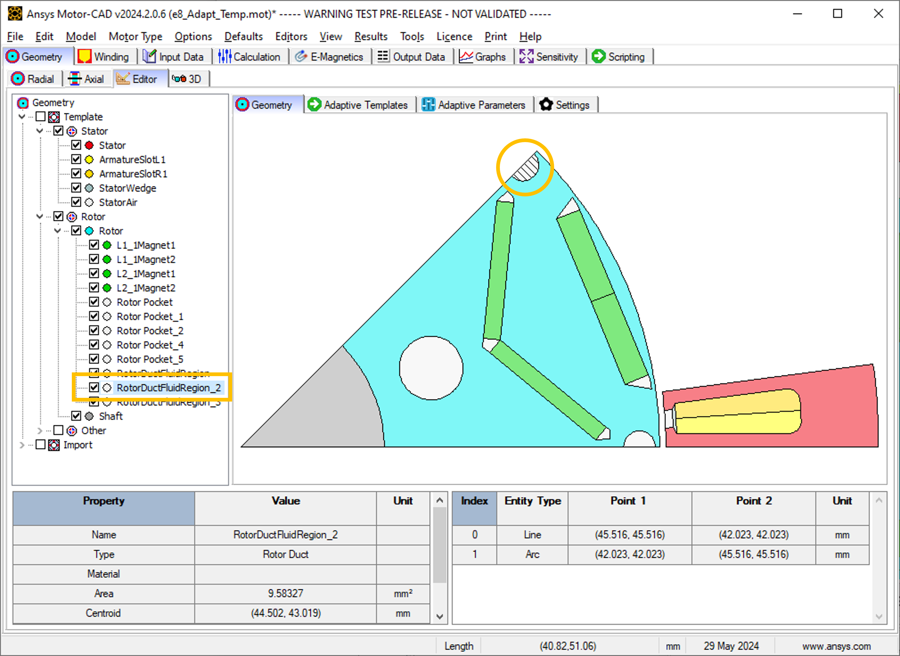
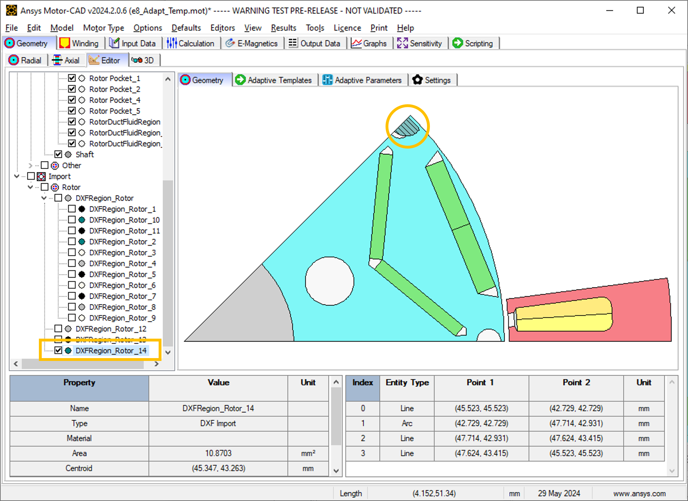

Note
Go to the end to download the full example code.
Custom DXF Geometry#
This script applies the adaptive templates functionality to import custom rotor geometry from a DXF file.
Note
For more information on how to add imported DXF geometries to Adaptive Templates in Motor-CAD, see Motor-CAD adaptive templates scripting in the User guide.
Note
DXF import for Adaptive Templates in Motor-CAD requires Motor-CAD 2024 R2 or later.
This script is designed to be run from Motor-CAD template “e8”. The “e8” template file contains an imported custom geometry from a DXF file. The template should be adjusted slightly to more closely match the imported custom geometry before running the Adaptive Templates script. The following Standard Template geometry changes should be made:
Set L1 Mag Gap Inner and L2 Mag Gap Inner to 0 mm (for Magnet Layers 1 and 2).
Set L2 Web Thickness to 18 mm (for Magnet Layer 2).
Set L2 Pole Arc [ED] to 105 electrical degrees (for Magnet Layer 2).
Set L2 RDuct Rad Dia to 123.8 mm (for Rotor Duct Layer 2).
Set L2 RDuct Dia to 4.94 mm (for Rotor Duct Layer 2).
If no Motor-CAD file is open, the e8 template is loaded and the geometry is adjusted as described earlier.
Perform required imports#
Import the pymotorcad package to access Motor-CAD.
Import the os, shutil, sys, and tempfile packages
to open and save a temporary MOT file if none is open.
import os
import shutil
import sys
import tempfile
import ansys.motorcad.core as pymotorcad
Connect to Motor-CAD#
If this script is loaded into the Adaptive Templates file in Motor-CAD, the current Motor-CAD instance is used.
If the script is run externally, these actions occur: a new Motor-CAD instance is opened,
the e8 IPM motor template is loaded, the geometry changes described earlier are applied and the
file is saved to a temporary folder.
To keep a new Motor-CAD instance open after executing the script, use the
MotorCAD(keep_instance_open=True) option when opening the new instance.
Alternatively, use the MotorCAD() method, which closes the Motor-CAD instance after the
script is executed.
if pymotorcad.is_running_in_internal_scripting():
# Use existing Motor-CAD instance if possible
mc = pymotorcad.MotorCAD(open_new_instance=False)
else:
mc = pymotorcad.MotorCAD(keep_instance_open=True)
# Disable popup messages
mc.set_variable("MessageDisplayState", 2)
mc.set_visible(True)
mc.load_template("e8")
# Set Standard Template geometry to closely match the imported DXF custom geometry
mc.set_array_variable(
"VShape_Magnet_ClearanceInner", 0, 0
) # Set the Magnet Inner Gap to 0 mm for Layer 1
mc.set_array_variable(
"VShape_Magnet_ClearanceInner", 1, 0
) # Set the Magnet Inner Gap to 0 mm for Layer 2
mc.set_array_variable("WebThickness_Array", 1, 18) # Set the Web Thickness to 18 mm for Layer 2
mc.set_array_variable("PoleArc_Array", 1, 105) # Set the Pole Arc to 105 ED for Layer 2
mc.set_array_variable(
"RotorCircularDuctLayer_RadialDiameter", 1, 123.8
) # Set the Rotor Duct Radial Diameter to 123.8 mm for Layer 2
mc.set_array_variable(
"RotorCircularDuctLayer_ChannelDiameter", 1, 4.94
) # Set the Rotor Duct Diameter to 4.94 mm for Layer 2
# Open relevant file
working_folder = os.path.join(tempfile.gettempdir(), "adaptive_library")
try:
shutil.rmtree(working_folder)
except:
pass
os.mkdir(working_folder)
mot_name = "e8_DXF_Import"
mc.save_to_file(working_folder + "/" + mot_name + ".mot")
# Reset geometry to default
mc.reset_adaptive_geometry()
Get required region objects#
Get the existing Standard Template regions, and imported regions that are required for the script.
Identify the required regions#
This workflow replaces existing template regions with corresponding imported regions. For example, the Standard Template geometry region RotorDuctFluidRegion_2 is replaced by a custom region from the imported DXF file.
Find the names of the corresponding DXF regions under Import in the Geometry tree on the Geometry -> Editor -> Geometry tab in Motor-CAD. Imported regions are displayed by selecting the checkbox. For example, the corresponding imported DXF region for template region RotorDuctFluidRegion_2 is named DXFRegion_Rotor_14.
This script replaces the entities (lines and arcs) of RotorDuctFluidRegion_2 with entities from DXFRegion_Rotor_14. The geometry is replaced, while the properties of the region RotorDuctFluidRegion_2, such as name, material, colour are retained.
Get existing template regions#
The regions in the existing template geometry to be replaced by custom regions from the
imported DXF geometry will be stored in a list. Use the get_region() method to get the
required regions and store these in the standard_regions list.
standard_regions = [
mc.get_region("Rotor Pocket_1"),
mc.get_region("Rotor Pocket_2"),
mc.get_region("Rotor Pocket_4"),
mc.get_region("Rotor Pocket_5"),
mc.get_region("RotorDuctFluidRegion_1"),
mc.get_region("RotorDuctFluidRegion_2"),
]
Get imported DXF regions#
The imported DXF regions to replace the existing regions with will be stored in a list. Use the
get_region_dxf() method to get the required regions and store in the replacement_regions
list. The indices of the regions in the standard_regions and replacement_regions lists
must match such that the corresponding standard and replacement regions share the same index.
For example, the RotorDuctFluidRegion_2 and DXFRegion_Rotor_14 regions are both the fifth
element of their respective lists.
replacement_regions = [
mc.get_region_dxf("DXFRegion_Rotor_6"),
mc.get_region_dxf("DXFRegion_Rotor_7"),
mc.get_region_dxf("DXFRegion_Rotor_10"),
mc.get_region_dxf("DXFRegion_Rotor_11"),
mc.get_region_dxf("DXFRegion_Rotor_14"),
mc.get_region_dxf("DXFRegion_Rotor_12"),
]
Replace standard_regions with replacement_regions#
For each standard region, use the Region.replace() method to replace the region with its
corresponding imported DXF region. The Region.replace() method replaces the entities
(lines and arcs) of a region with entities from another region. The geometry entities are
replaced, while the properties, such as name, material, colour, of the original regions are
retained.
For more information on the Region.replace() method, see the entry under Region in
Geometry objects and functions in the API reference documentation.
Once the entities have been replaced, use the set_region() method to set the modified region
in Motor-CAD.
for index in range(len(standard_regions)):
i = standard_regions[index]
i.replace(replacement_regions[index])
mc.set_region(i)
Load in Adaptive Templates Script if required#
When this script is run externally, the script executes the following:
Set Geometry type to Adaptive.
Load the script into the Adaptive Templates tab.
Go to the Geometry -> Radial tab to run the Adaptive Templates script and display the new geometry.
Note
When running in a Jupyter Notebook, you must provide the path for the Adaptive Templates script
(PY file) instead of sys.argv[0] when using the load_adaptive_script() method.
if not pymotorcad.is_running_in_internal_scripting():
mc.set_variable("GeometryTemplateType", 1)
mc.load_adaptive_script(sys.argv[0])
mc.display_screen("Geometry;Radial")
Total running time of the script: (0 minutes 39.673 seconds)